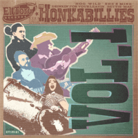

the Honkabillies - Vol. 1 (EP, 2018)
01 - Hog Wild (2:41)
02 - She's Mine (2:06)
03 - Drinkin' For Your Leavin' (2:48)
04 - Bettie-Mae (2:37)
© El Toro Records :: [ET-15.121]
Notes
United Kingdom, England.
Frankie P. Riedel - Vocals, Acoustic guitar
Frankie S. Riedel - Lap Steel guitar, Lead guitar, Acoustic guitar, Backing vocals
Rich Lyon - Double bass (Upright bass)
Claire Gipps - Drums
Engineer - Frankie S. Riedel
Arranged by F.S. Riedel
Producer, Mixed by Frankie P. Riedel, Frankie S. Riedel
Songs are written-by F.P. Riedel
Phonographic Copyright (p) El Toro Records 2018
Copyright (c) HepRecs 2018
reference information: Discogs®
Review
018/366 (Project 366)
Balanced rhythm, hot and sweet guitars, stylish drums and double bass. Well, these walking melodies with so fine authentic mood. Lap steel guitar sounds with a special chic. Lead vocals - wonderful for this kind of Rockabilly. Great overall sound. Wild and rustic! But so elegant.
First track "Hog Wild" and second "She's Mine" with quite one mood. First song with a definitely catchy beginning, invigorating singing and an affable guitar, full of adorable drive. However, second track is a bit more rockin' and rollin'! Third track "Drinkin' For Your Leavin'" is a little tougher, slightly wild and with hard ballad story. Voice is rather ideal there. Smooth arrangements add enjoy and coolness, rhythm and melody with tuny guitar solos. Let the creaky guitar do gritting strings! What else could be better? This EP "Vol.1" has a pretty answer to this. Fourth track "Bettie-Mae" is around country rockin'. Well, as whole sound of the Honkabillies - Honky Tonk too. But this Country Rockabilly song is so wisdomly good. Lovely backing vocals and just almost perfect. Heartwarming tone of songs between Hillbilly and Rockabilly with Country flavour is always very pleasant to listen to. But when such a skillful team does it - charm! Even while scratchin' heartbeat or while the hum of a steam locomotive keep rollin'.
"Vol.1" is a different and sweetly tuned top thing. All songs are original. Melodious, harmonious, touching. With tempo swings and with a decent musical motive. Catchy Honkytonk raw Rockabilly. Authentic rockin' and rollin' craze. Perhaps this release should be the find of the genre with an extremely attractive and brilliant sound. With a very stylistically verified look.